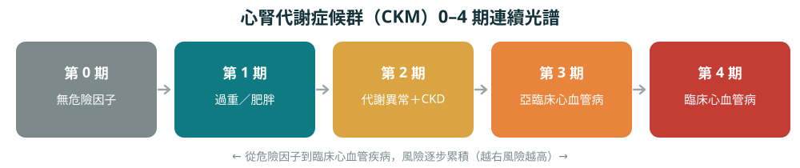
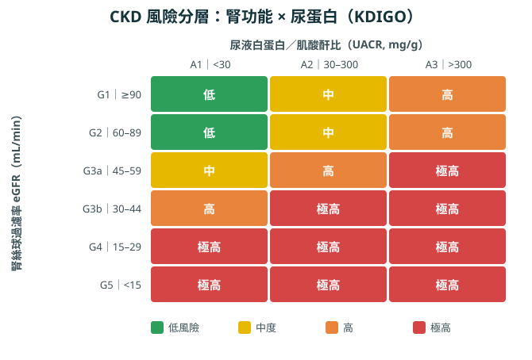

先看一個門診故事
門診裡，一位 62 歲的男性來追蹤他的糖尿病和高血壓。他自覺「還好啊，沒什麼不舒服」，能吃能睡、照常上班。但這次的抽血和驗尿讓我多留意了一下：他的腎絲球過濾率（eGFR）比一年前下降了一些，尿液裡也驗出了微量白蛋白（蛋白尿）。「醫師，我又沒有腰痠、也沒水腫，腎臟怎麼會有問題？」這是我在門診幾乎每週都會被問到的話。
腎臟壞掉，常常一點感覺都沒有
我常跟病人說，腎臟是很「忍」的器官。它是身體的濾水器，負責清除血中廢物與多餘水分；但當它慢慢受損時，早期幾乎不會有任何症狀。等到會累、水腫、食慾變差、尿變多泡泡才警覺，往往功能已經掉了一段。所以慢性腎臟病被叫做「沉默的疾病」——沒有感覺，不代表沒有問題。
為什麼腎不好，最先要命的其實是心臟？
這是我最想讓大家知道的一點。很多人以為腎臟病最壞就是「洗腎」，但慢性腎臟病患者最常見的死因，其實是心臟病與中風，而不是洗腎。而且在很早期、腎功能只是輕微下降時，心血管風險就已經明顯升高了。
原因是心、腎、代謝根本是一整組：血糖高、血壓高、肥胖會傷腎，腎不好又回頭傷害心血管，彼此拖累，形成惡性循環。近年醫學把這一組合稱為「心腎代謝症候群（CKM）」，並分成 0 到 4 期的連續光譜——所以對我這個心臟科醫師來說，顧好病人的腎，本來就是在保護他的心臟。

篩檢其實很簡單：兩個數字
像這位病人這種糖尿病、高血壓、心血管病、肥胖、有家族腎病史或年長的族群，是高風險群。而要及早抓到問題，只需要兩個檢查：
國際 KDIGO 指引就是用這兩個數字，把病人分成綠、黃、紅不同風險區，決定要多密集追蹤、多積極治療。

好消息：現在能延緩，甚至穩住
過去大家以為腎功能只會一路下滑；但這幾年治療進步非常多，只要早發現、用對藥，可以明顯延緩惡化。我通常會依病人狀況組合幾個方向（都需醫師評估與處方）：
- 把血壓、血糖控制好——這是地基。
- RAAS 抑制劑（某些降壓藥）——同時保護腎臟、減少蛋白尿。
- SGLT2 抑制劑（排糖藥）——原是糖尿病藥，現已證實能同時護腎又護心，連部分非糖尿病的腎病也適用。
- 非類固醇型 MRA（如 finerenone）——針對腎臟的發炎與纖維化，進一步降低心腎風險。
- GLP-1（俗稱「瘦瘦針」）——對肥胖／糖尿病族群，兼具減重、護腎與護心。
你自己能做的
- 規律回診，追蹤 eGFR 與尿蛋白。
- 飲食少鹽、蛋白質適量（不是完全不吃，依醫師與營養師建議），多蔬果、少加工食品。
- 戒菸、規律運動、維持健康體重。
- 小心傷腎的東西：止痛消炎藥（NSAID）別長期亂吃、來路不明的中草藥與保健品尤其危險、做含顯影劑的檢查前先讓醫師知道你的腎功能。
回到這位病人
他其實一點症狀都沒有，卻在一次例行抽血驗尿裡，抓到了早期的腎臟警訊。我幫他調整了用藥、把血壓血糖顧得更緊，並約好定期追蹤。對他而言，這一次的「沒感覺」被及時發現，反而是幸運的。
本文以門診常見情境改寫，非特定個案。個別診斷、用藥與飲食請以您的醫師與營養師評估為準。